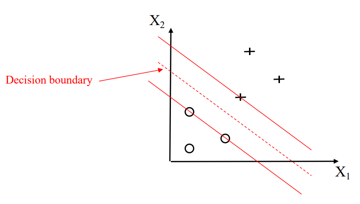

机器学习之贰：SVM, 决策树与 KNN
又一个普通的清晨，支持向量机在决策树身旁醒来，发现全世界 Deep Neural Network 模型的 performance 下降了 100000 倍。
This article is a self-administered course note.
It will NOT cover any exam or assignment related content.
Support Vector Machine 支持向量机
Mathematical Intuition
引入：二维平面上点的二分类问题 (假设这些点是线性可分 linearly separable 的)。
与 perceptron 不同，SVM 的 objective 并非最小化 misclassification errors，而是找到最优的 decision boundary (aka hyperplane)。所谓最优的定义是：samples 到最优超平面的最小距离最大化。

- 虚线：最优的 decision boundary aka hyperplane。
- 两条实线：margin boundaries。margin boundaries 间的距离 \(2d\) 被称为 margin。
- 位于 margin boundaries 上的 samples 被称为 support vectors (支持向量)，定义了所有 samples 到超平面距离的最小值。
SVM 的 objective 即最大化 margin；也即最大化 support vectors 到 hyperplane 的距离。
先来复习一下高中数学。点 \(\mathbf{x}=(x_0,y_0)\) 到直线 \(Ax+By+C=0\) 的距离是： \[ \frac{|Ax_0+By_0+C|}{\sqrt{A^2+B^2}} \] 不妨把分母写成 \(|w^Tx+b|\)，其中 \(w^T\) 是直线法向量的转置 \([A,B]\)，\(b\) 是直线的常数项 \(C\)。这样推广到 \(n\) 维： \[ \frac{|w^Tx+b|}{||w||}, \ ||w|| \text{ defines the L2-norm of } w \] 定义 support vectors 到 hyperplane 的距离为 \(d\) (margin 的一半)。二分类问题把 samples 划分为两类 \(x_{pos}\) 与 \(x_{neg}\)。那么，对于所有 samples \(x\in X\)，有： \[ \frac{w^Tx_{pos}+b}{||w||}\geq d,\frac{w^Tx_{neg}+b}{||w||}\leq -d \] \(x_{pos}\) 的 label 为 \(1\)，\(x_{neg}\) 的 label 为 \(-1\)。利用这一点整合上述不等式： \[ y\frac{w^Tx+b}{||w||d}\geq 1 \] 是不是很优美？但此时 objective 还不够明显。首先我们注意到对于同一个 hyperplane，\(w\) (或 \(||w||\)) 的值是不固定的；这是因为 \(Ax+By+C=0\) 与 \((Ak)x+(Bk)y+Ck=0\) 表示的是同一条直线。为了消去常数 scaling 带来的自由度，我们不妨令 \(||w||d=1\) 即 \(d=1/||w||\)，原约束转化为： \[ y(w^Tx+b)\geq 1 \ s.t. \ d=\frac{1}{||w||} \] 这下水落石出了！之前我们提到，SVM 的 objective 是最大化 margin \(2d\)，即最小化 \(||w||\)。为了后续计算的方便，我们定义 SVM 的 objective function 为最小化 \(\frac{1}{2}||w||^2\)。这样，一个二分类问题就转化为了最优化问题： \[ \text{solve argmin}_{w,b} \frac{1}{2}||w||^2 \ s.t. \text{ constraints } \forall_i \ y^{(i)}(w^Tx^{(i)}+b)\geq 1 \text{ are satisfied} \] 这个最优化问题可以进一步采用 Lagrange Multipliers 方法求解。这就是 SVM 的 mathmatical intuition 了。
SVM 对 feature scaling 很敏感。通常应用 scaling 能 yield better results。
Soft Margin Classification
所有约束都被严格满足的 SVM 被称为 Hard Margin Classification。这种模型显然是缺少灵活性的。
- 如果 samples 是 linearly inseparable 的，找不到最优超平面。
- 对 outliers 敏感。在 negative side 添加一个 positive outlier 就会极大影响 hyperplane 的位置。
Soft Margin Classification 允许 misclassification 的存在，但引入 slack variable \(\xi\) 对其施加 penalty。
定义 Hinge Lost Function 如下：当 sample 被正确分类时，penalty 为 0，反之获得一个和与 hyperplane 距离成正比的 penalty： \[ \xi^{(i)}=\max(0,1-y^{(i)}(w^Tx^{(i)}+b)) \] 引入 slack penalty 系数 \(C\)，Soft Margin Classification 定义下的最优化问题转变为： \[ \text{argmin}_{w,b,\xi^{(i)}} \frac{1}{2}||w||^2+C(\sum_i \xi^{(i)}) \ s.t. \text{ constraints } \forall_i \ y^{(i)}(w^Tx^{(i)}+b)\geq 1-\xi^{(i)} \text{ are satisfied} \] 这个形式实在很像 regularization，事实上也与其相关。增加 \(C\) 将使模型的 bias 增加，variance 减少。
Kernel Trick
简单的介绍什么是核技巧。
对于线性不可分的数据，将其原有的 features 进行重新组合 (生成若干 nonlinear combinations)。以这种方式把数据投射到高维空间上 (project onto higher-dimensional space)；在那里数据可能变得线性可分。
在使用 Lagrange Multipliers 解 SVM 优化问题时，我们常常需要计算两个 samples 间的内积 \(x^{(i)T}x^{(j)}\)。但当 \(x\) 被投射到高维空间 \(\phi(x)\) 后，\(\phi(x^{(i)})^T\cdot \phi(x^{(j)})\) 的计算将会变得十分昂贵。
核函数 (kernel function) \(K\) 则是具有以下特殊性质的一类函数：\(K(x^{(i)}, x^{(j)})=\phi(x^{(i)})^T\cdot \phi(x^{(j)})\)。在应用核函数的情况下，我们还是只需要计算 \(x^{(i)T}x^{(j)}\)，但实质上却达到了把数据投射到高维空间的效果。
应用了核技巧的 SVM 被称为 Kernel SVM。常见核函数：
- 线性核。
- 多项式核。
- 高斯核 \(K(x^{(i)}, x^{(j)})=\exp(-\gamma||x^{(i)}-x^{(j)}||^2)\)。tunable 参数 \(\gamma\) 的作用见 [Chapter 3 pp.67-69]。
Decision Tree 决策树
可解释性 (interpretability) 最强的模型。
- node - a test on the attribute.
- branch - the out come of the test.
- leaf node - a class label.
节点 \(t\) 的不纯净度 (impurity, aka label uncertainty) \(I\) 的三种定义方式。\(p(i|t)\) 常被定义为 \(N(i)/N(t)\)，即节点 \(t\) 中 class \(i\) labels 的数量占所有 labels 数量的比例。
- Entropy. \(I_H(t)=-\sum_{i=1}^c p(i|t)\log_2 p(i|t)\).
- Gini Impurity. \(I_G(t)=\sum_{i=1}^c p(i|t)(i-p(i|t))=1-\sum_{i=1}^c p(i|t)^2\).
- Classfication Error. \(I_E(t)=1-\max \{p(i|t)\}\)
当 splitting a node 时，决策树的 objective 是最大化 information gain。splitting 方案 \(f\) 作用在节点 \(D_p\) 上，分支出 \(m\) 个子节点 \(D_i, 1\leq i\leq m\)，获得的信息 (降低的不确定性) 是： \[ IG(D_p, f)=I(D_p)-\sum_{s=1}^m\frac{N(D_s)}{N(D_p)} I(D_s) \] 随机森林 (Random Forests) 是多个决策树的 ensemble，通过大多数投票进行预测。随机森林的随机性体现在个体决策树的差异上，这种差异来自于：
- 决策树生长在不同的 bootstrap sample (随机从训练集中选出的一个大小为 \(n\) 的子集) 上。
- 决策树分裂节点时随机且不放回的选取 \(d\) 个特征，只在这些特征上进行测试。
随机森林的重要参数：bootstrap sample 的大小 \(n\)。增大 \(n\)，个体决策树间的差异与随机性减小，模型向 overfitting 移动；减小 \(n\) 则反之。
K-th Nearest Neighbors K 近邻算法
很符合直觉的算法。只需要参数 \(k\) 与一种 distance metric (Manhattan, Euclidean, Minkowski...)。
对某个 testing sample，通过计算距离选出离它最近的 \(k\) 个 training samples，直接把这 \(k\) 个邻居 labels 的大多数投票作为预测的结果。显然，\(k\) 增大，模型向 overfitting 移动；\(k\) 减小反之。
KNN 的 pros：简单，方便，模型不需要随着训练集的增大而更新。
KNN 的 cons：
- 时空复杂度均为 \(O(nd)\)，\(n\) 为训练集大小，\(d\) 为特征数量。对于较大的数据集，计算压力会很大。(当 \(n\) 较大但 \(d\) 较小时，KD 树实现有较为优秀的表现)
- Curse of dimensionality (维度灾难)。高维空间 (维数 = \(d\)) 下最近的邻居在绝对意义上也可能相距较远，“近邻”的概念变得失去意义，模型很容易 overfitting。缓解方法：feature selection, dimensionality reduction 等技巧。
Reference
This article is a self-administered course note.
References in the article are from corresponding course materials if not specified.
Course info: COMP3314. Lecturer: Prof. Yizhou Yu.
Course textbook: Mathematics for Machine Learning. M. Deisenroth, A. Faisal & C.Ong.